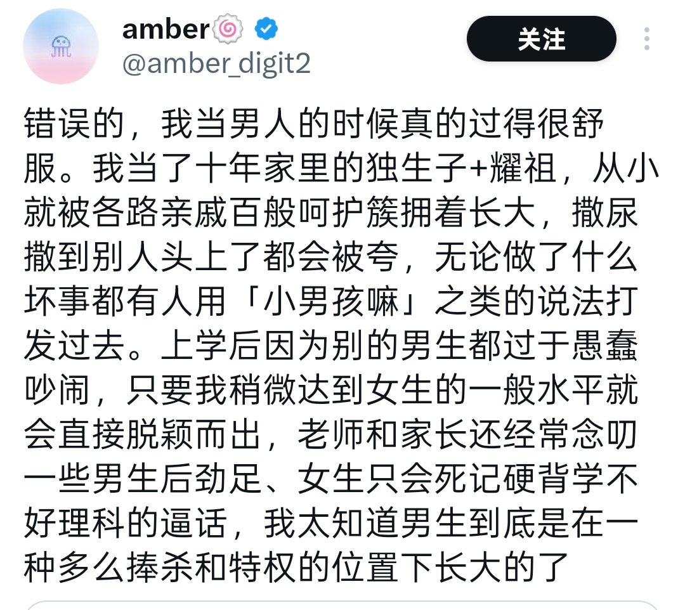

amber🍥
@amber_digit2
@aeiQ5NP3CdaHpLW 有没有可能我爹就是农民

🇺🇦🇨🇳网友新鲜的冻鱼🥺
@aeiQ5NP3CdaHpLW
阶级斗争叙事是历史科学，不是意识形态对骂
大家看Amber就很好理解，他把炫耀自己目中无人欺负人还有人保护万般呵护说成“男性特权”，那请问农民的儿子有这种“男性特权”吗？
他不敢承认自己的一切都是因为家里有钱，甚至他会说农民的儿子也有男性特权
说到底也是在维护自己利益 https://t.co/VZEvnvf2re https://t.co/sQD1tmHX8E